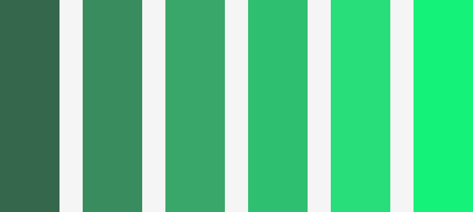

Proyecto SINABI
Este es uno de mis proyectos mas recientes que es la creacion de una paleta de colores nueva para la pagina del SINABI, es un trabajo que lo comence relativamente hace poco y que realmente espero que le guste la nueva paleta de colores a los señores del SINABI